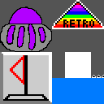

Retro Remaster
 This project is a recreation of 4 classis games, developed in a short period of time using a handmade WebGL renderer. The first game in the collection is Minesweeper, then comes Geometry Dash, Snake, and a Pong-inspired game.